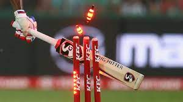
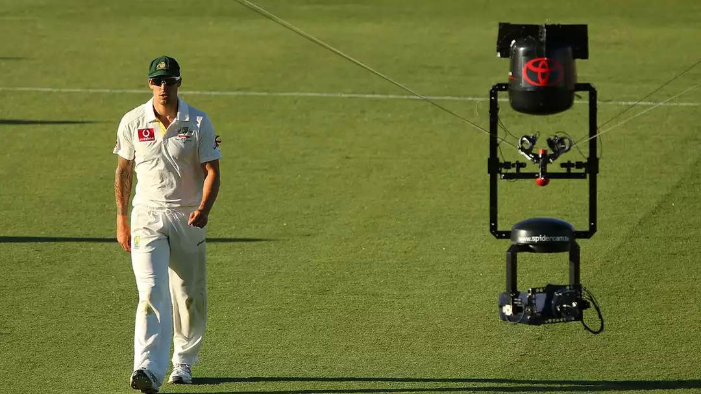

.png)

The Gentleman's game has its roots in the 16th century. So far, in these five centuries, the sport of cricket has progressed and been introduced to various levels. From the first recorded international match between Canada and the United States (in 1844 at the St George's Cricket Club in New York) to the latest T10 Cricket Leagues, the game has seen plenty of innovative discoveries, many of which have adorned the experiences of spectators and similarly the lives of the athletes.
In modern-day sports, analytics are a primary element and a major factor in determining a team's success, as well as analyzing failures and areas for improvement.
Technological advancement has been incorporated in every field of sports and it had a huge influence on cricket as well. Due credit must be given to the International Cricket Council (ICC) for fusing modern technologies in cricket. These technologies boost the interest of the fans and bring more attraction to the game.
Different sports technologies assist the athletes to improve themselves as it helps them concentrate on the domains where they need to improve. Technology also helps the skippers and leaders in devising different tactics. It has made life easier for the umpires to make accurate decisions. A list of such technological developments has been considered here, which either recently or over time have revolutionized the experience of Cricket.
The Bowling Machine:
The Bowling Machine (also known as Bola Machine) is a machine that can replicate the spin and swing of bowlers which was developed by Michael Stuart (in 1985), a club cricketer, as part of a virtual reality project to improve match training for cricket. Michael Stuart displayed this machine at a University conference to manifest its working principles.
The spin and swing are put on the ball by a combination of two spinning wheels and a barrel which uses rifling theory to add sidespin.
This machine creates the leg break or off-break deliveries, and can also reduce swing and reverse swing copying fast bowlers like Wasim, Glenn McGrath, Shane Bond, Waqar Younis. This machine was specially designed to include all the aspects of bowling that the real bowlers use such as the orientation of the seam on the ball and the speed at which it is released.
Nowadays, technologists aim to add a visual factor to this machine so that the batsmen can observe a projection of bowler ahead of the machine, so this technology is like a revolution in cricket training.
Speed Gun
According to the official Guinness world records, “The fastest electronically measured speed for a ball bowled by any male bowler is 161.3 km/h (100.23 mph) by a well-renowned and terrifying Pakistani pacer Shoaib Akhtar (Broadly known as The Rawalpindi Express) against England on 22 February 2003 in a World Cup match at Newlands, Cape Town, South Africa.” This grand and chivalric world record was actually measured using a Small Doppler Radar Unit that can detect the speed of moving objects i.e. the moving ball.
Unquestionably this technological advancement is an imperative segment in cricket to provide the estimated speed of bowling.
HawkEye - Ball Tracking System:

Hawkeye was invented in 2001 to explicate the trajectory of the ball once delivered from the bowlers' hand. This technology is the most extensively used technology by the broadcasters to provide another perspective view for the Leg Before Wicket (LBW) appeals to the commentators and viewers.
This technology uses a slew of cameras placed around the ground or aligned under the stadium roofs to generate a three-dimensional representation of the trajectory of the ball thereby helping in the judgment of the LBW appeals. It is also implemented in the Umpire Decision Review System.
Snickometer - Ultra Edge:

Also known as “Snicko” in the cricket dialect, the Snickometer was invented by Allan Plaskett to serve the umpires in detecting the edge and the preceding caught behind the wickets.
Snicko produces a disturbance in the graph when the surface of the ball touches the bat or any other part of the batsman. Snickometer uses a microphone, placed near the stumps, to detect the sound of the hit and determine the surface of the impact. The shape of the frequency helps the third umpire in making a conclusive decision.
HotSpot - Edge Detector:
Another recent breakthrough in cricket technological assets is the HotSpot implementation. But it came into play after the Snickometer was reportedly considered not accurate enough.
Using an advanced infrared detection system to detect the heat signature of the ball’s impact, the HotSpot is substantially helpful in judging the slightest edges and close bat-pad LBW shouts. It uses the camera on both ends of the ground and provides information based on the heat friction generated by a collision.
Although it provides highly accurate results, the technology is not widely implemented in Cricket due to the expensive and sensitive equipment and setup.
Stump Mic & Camera:
In order to provide a more in-depth experience to the viewers, the Stump Mic & Camera are utilized to closely broadcast the batsman's view on the pitch. The camera is vertically aligned in the hollow middle stump through a small window on the side of the stump via a mirror. While the mic is also attached to the middle stump and used to receive the sound waves and helps the umpire whilst taking decisions when the batsman nicks the ball.
LED Stumps and Bails:

Slightly heavier than the usual wooden stumps, the LED Zing bails and stumps are the latest technological installation in cricket. LED stumps were first used during the 2013 Australian Big Bash League and subsequently in the 2014 and 2016 ICC World T20 Cups along with the 2015 ICC World Cup. The LED stumps were an innovation by Bronte Eckermann.
Though an expensive technology, LED Bails are used to helping the umpires make a precise decision when it comes to decisions regarding run-outs. The bail glows when it is dealt with an impact. It has a sensor, a microprocessor, and a low-voltage battery.
Spidercam:

The Spidercam is another remarkable and one of my favorite improvements in the coverage of cricket matches since it provides a unique angular view of the matches to the viewers.
The Spidercam is a system that enables the cameras to move both vertically and horizontally over a defined area i.e. the Cricket ground. It is operated using four motorized winches positioned at each corner of the ground. Each winch is controlled using a Kevlar cable connected to a gyro-stabilized camera carrier. This system is controlled through software and enables the camera to literally reach each and every corner of the ground as defined in its 3-dimensional coverage area.
Sportswear and Equipment:
Improvements in sportswear and cricketing equipment technology over the last few years have mainly changed the helmet design and the materials used, size and weight of bats, thickness and weight of pads and gloves with a little change in regards to the ball, hats, etc.
Fabrics now being used are proven to keep warm, dry, cool to improve performance, to help recover quicker, and even smell better for sports clothing. The beauty of sportswear is that they are quite light in build and do not restrict free body movement of the player.
Moreover, chips are installed in the bats and balls so as to measure the angle, the bat speed, swing, and seam for various analysis purposes. These chips are inserted in the handles of the bat to study the motion of the bat while hitting the ball. These are exclusively designed to bestow complete versatility and ease to play.
Conclusion on the rise of technology in Cricket:
In this article, we have discussed various technological advancements in cricket such as Bowling machines, Hawkeye, Hot spot, speedometer, stump mic & camera, ultra edge, and sportswear technology, etc. Not only these advancements have helped to make correct decisions but they have also nourished the game vastly and this made the competition more 'smarter'. These new innovations are extensively been effective and serve as a treat for the viewers. They also help in analyzing various nuances of the game of cricket.
Comments